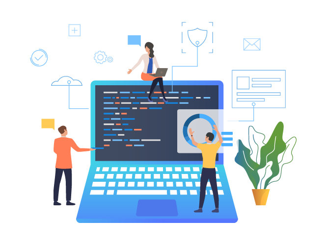

Key Features

An initiative of a New Media Network, a multi-media initiative for the fast and real-time dissemination of news and information related to civil services, central PSUs and other institutions that play a critical role in governance, administration, corporate governance, and public life in India.
Main request and our first challenge while creating a portal was creating advertisement banner all over the page, at least 20 banners were placed on a single home page which needs to be changed through admin panel.
While the project was still in development phase we received many change request from client. Accepting and developing those changes was a challenge on its own.
Placing every banner with news content on same page was very hectic, as we need to make website mobile friendly too. Showing banner and content and arranging them as such was a great challenge at that time.
We started developing the portal from scratch and reached at a point where all the challenges faced by us were completely achieved, UI, UX and mobile compatibility all targets were achieved successfully.
I was totally Furustation with my earlier experiences various services providers with whom I gave my website to manage but all of them were disgrace to this industry fortunataly i come across UE Developer, a bunch of hardworking chaps with all the ingridents of becoming great MNC company in future. They are managing my website Since last 3 Years without any glitch
Through indianmandarins knowing about latest news and current affairs was easy, lot of students and other applicants applying for civil services gained their knowledge through indian mandarins, one place to know all.